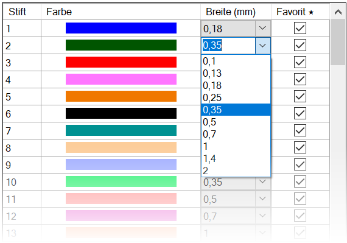
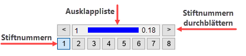

")

Stiftzuweisung. Konfiguration der Stiftfarben und -breiten für die Bildschirmdarstellung.
 |
Stift (1 - 256)
Stiftnummer, die bei verschiedenen Menüfunktionen über die Stiftauswahl im Funktionsbereich gewählt werden kann.
Stiftauswahl (im Funktionsbereich)  |
Farbe
In der Bildschirmdarstellung verwendete Farbe.
Um Farbeinstellungen zu ändern: §Klicken Sie auf das gewünschte Farbfeld. Der Dialog Farbe wird geöffnet.
§Sie können eine Grundfarbe wählen oder eigene Farben mit Farbe hinzufügen definieren. §Verschieben Sie mit gedrückter Maustaste das Kreuz im Farbauswahlfeld, um die Farbanteile für Rot, Grün und Blau zu verändern. Verwenden Sie den Schieberegler für die Helligkeit. §Klicken Sie die gewünschte Farbe an und bestätigen mit OK. Die gewählte Farbe wird übernommen und im Farbfeld angezeigt. |

Breite (mm)
Stiftbreite in der Bildschirmdarstellung. Die angegebenen Stiftbreiten können für die Plot-/Druckausgabe übernommen werden.
Die Stiftbreite wird nur dann maßstabsgetreu dargestellt, wenn für die Stiftbreiten-Darstellung die Option In Millimeter abhängig von Zoomtiefe aktiviert ist. [Option | Einste → Stiftbreiten].
Um eine Stiftbreite zu ändern: Auf die gewünschte Stiftbreite klicken, Breite in Pixel eingeben und mit der Eingabetaste bestätigen. Alternativ kann die Stiftbreite aus der Dropdown-Liste  gewählt werden.
gewählt werden.
Favorit *
Aktivierte Stifte werden in der Stiftauswahl an erster/oberster Stelle angezeigt.
Wenn Sie eine Datei öffnen, die mit ISBCAD 2014 oder älter erstellt wurde, werden alle in der Datei enthaltenen 32 Stifte als Favoriten gekennzeichnet. Deaktivieren Sie ggf. die Option Favorit * bei den nicht so oft benötigten Stiften.
Zugehörige Referenz: